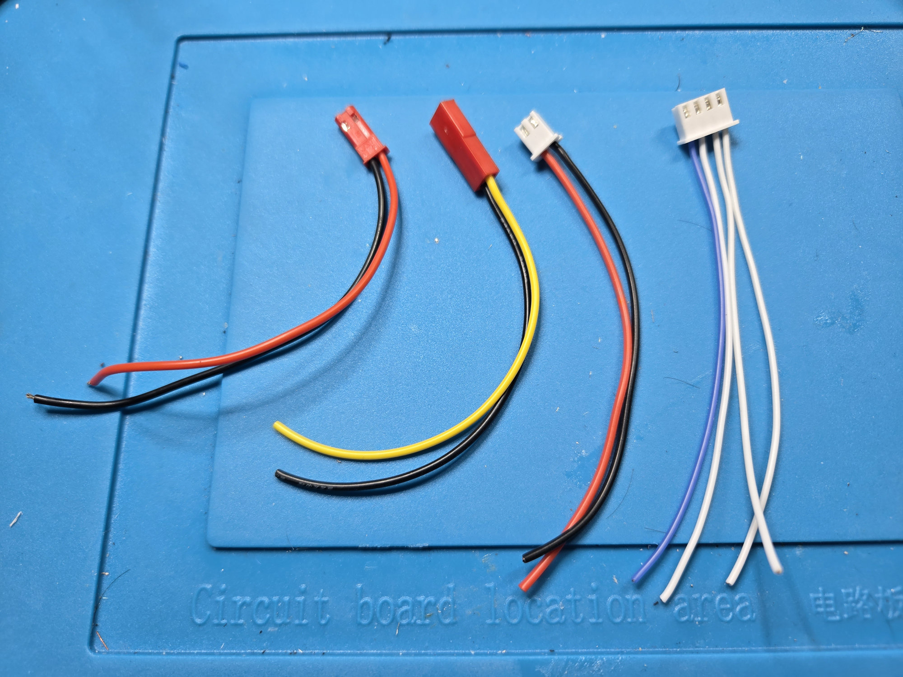
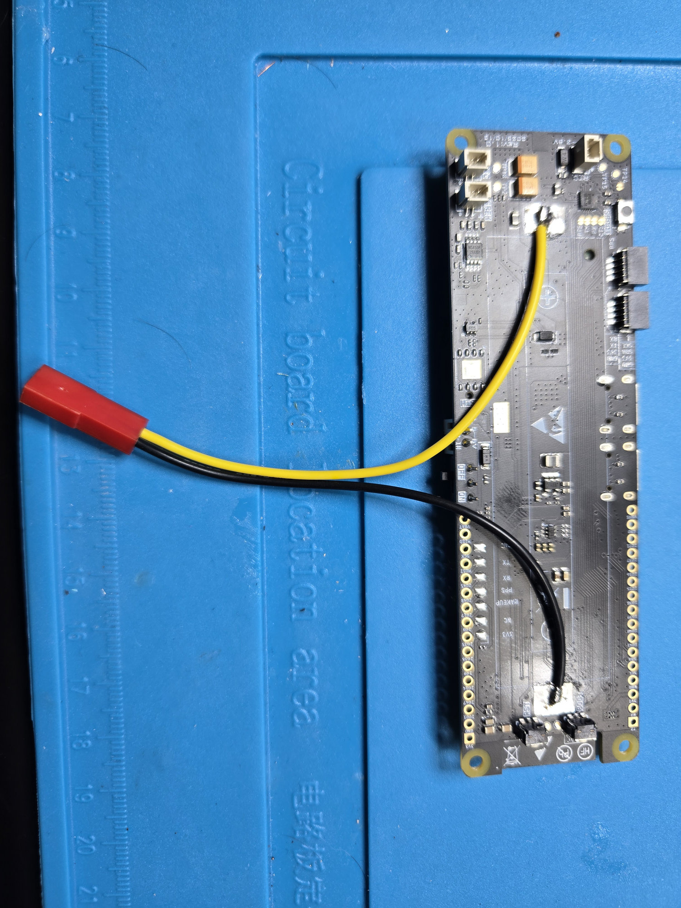
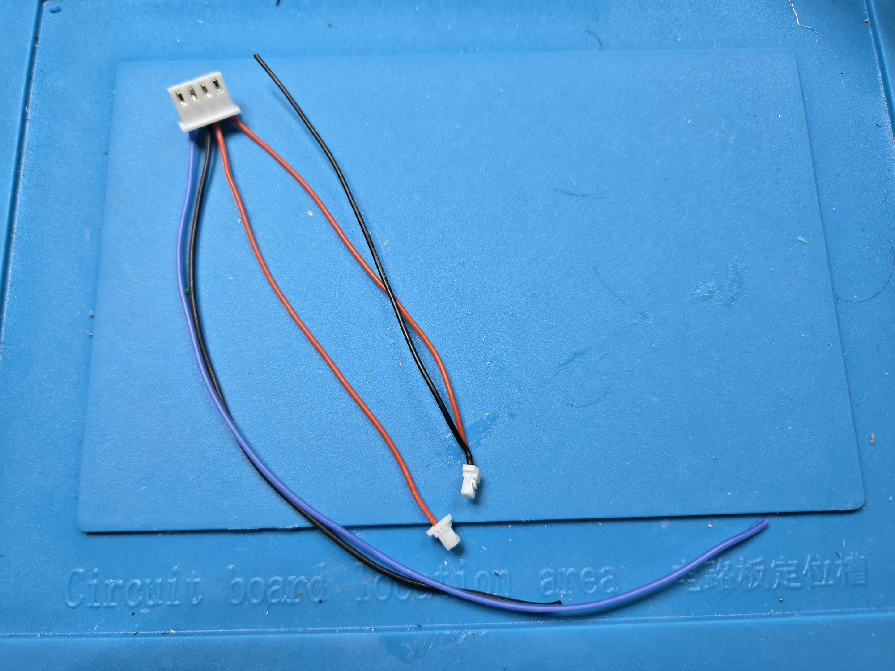
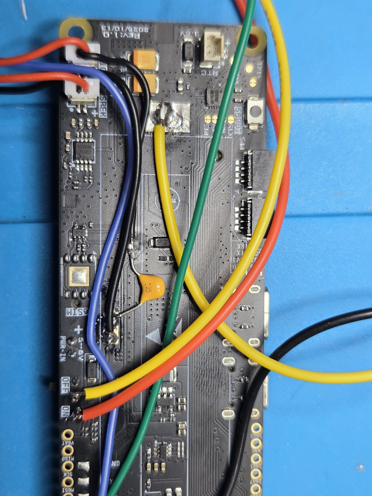
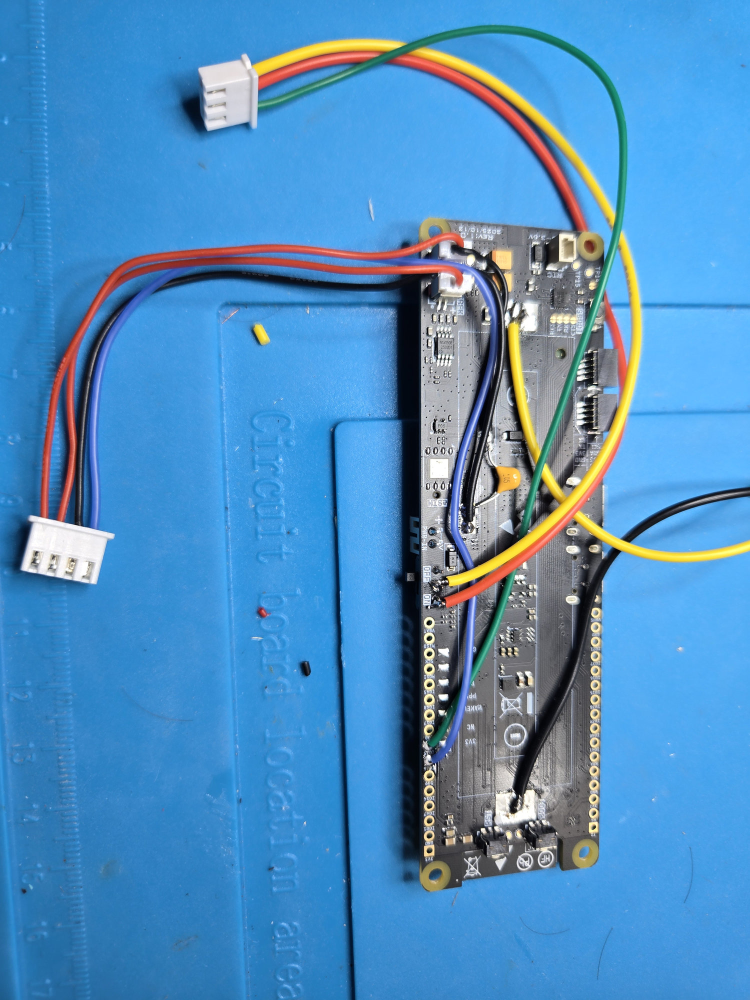
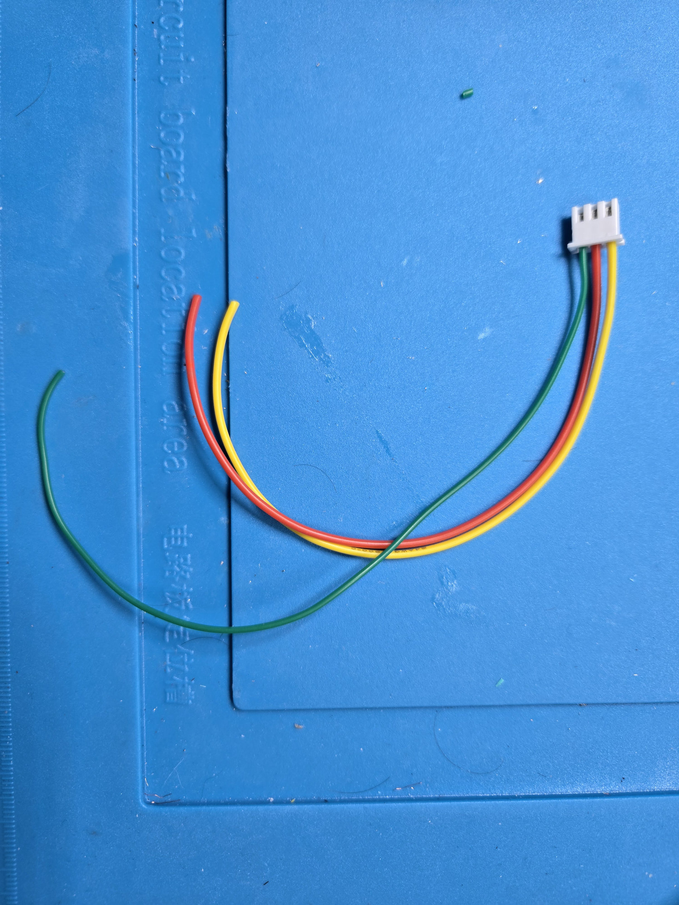
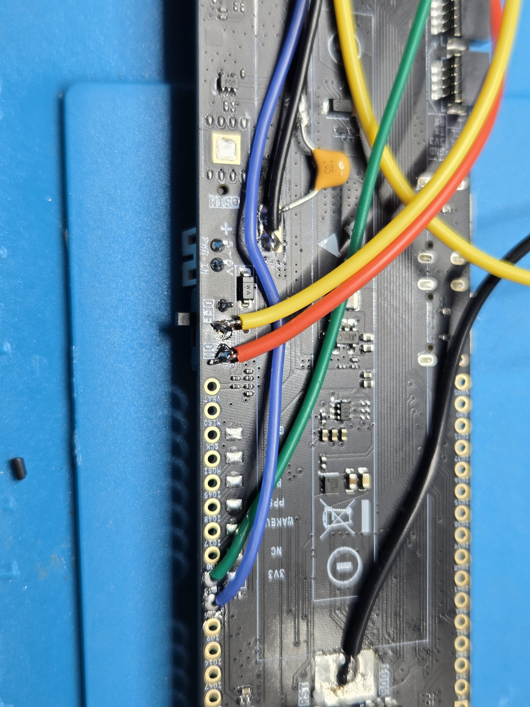
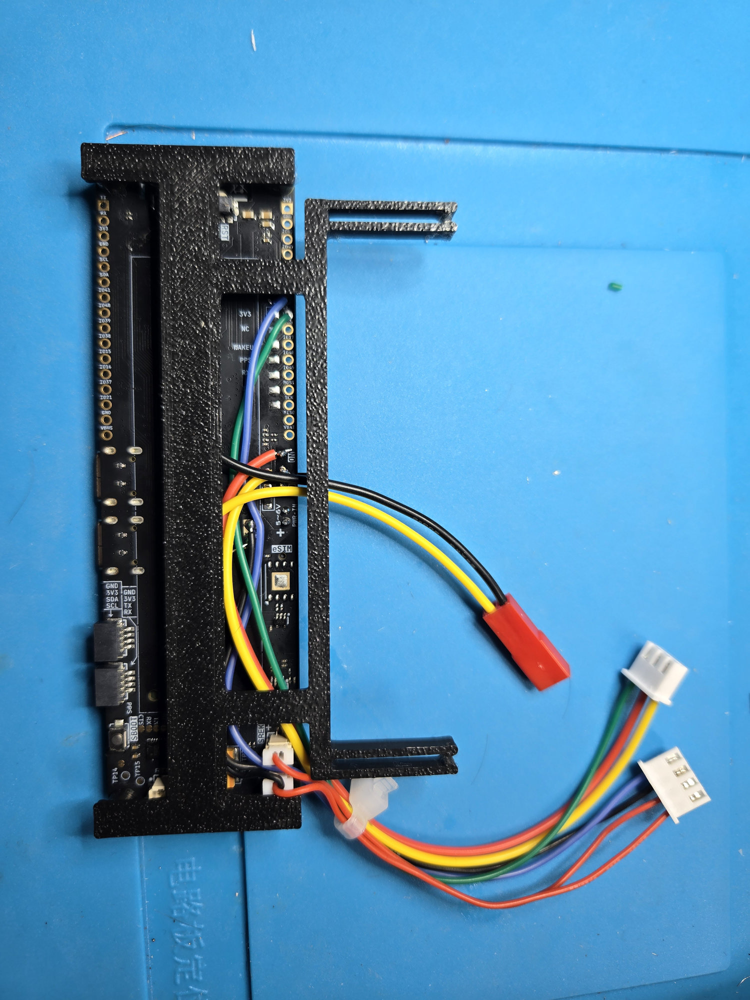

RotaryCell / build guide
Add the LilyGO connections
Add and label each group separately. The overview and close photographs below show the connector orientation and routing used in the working build.

Four harnesses attach to the LilyGO. From left to right in the photograph:
| Harness | Wire identification used in this build |
|---|---|
| Charging input | 10 cm red and black pair with red two-position connector |
| 21700 battery | 10 cm pair; yellow is unswitched battery positive and black is battery negative |
| AG1171 carrier power | 10 cm red and black pair with white two-position connector |
| AG1171 carrier signals | Four 10 cm signal wires in a white connector; the blue conductor marks orientation |
Throughout this build, black is negative and yellow identifies unswitched battery positive. The blue wire in the four-conductor signal harness is an orientation marker; compare its position with the completed-board photographs before inserting the contacts into the housing.
The current-carrying red, yellow and black conductors shown here are 24 AWG. The signal-only conductors are 28 AWG. These are the gauges used in the working build; the signal currents themselves are small.
Battery and protected-system power
Connect the prepared 21700 leads to the LilyGO battery-positive and BATN
points formerly used by the holder. The AG1171 carrier receives positive power
from the LilyGO VBAT pad and returns through LilyGO system GND. Its ground
does not connect directly to BATN.

The yellow and black battery leads leave opposite ends of the former holder area. Keeping both at 10 cm provides enough lead to reach the 21700 without leaving a large loop inside the phone.
Audio and tone
The Audio/Reset A4 harness uses GPIO36 for generated telephone tones, common
ground, SPEK+ and MIC+.
- Leave
SPEK-insulated and floating. - Connect
MIC-to system ground through the external 1 µF film or bipolar capacitor used in the tested build.

The signal-only conductors in this harness are 28 AWG. Cut and prepare them as follows:
| Connection | Color | Length | Preparation |
|---|---|---|---|
| Common ground | Black | 14 cm | Leave loose for its LilyGO connection |
| GPIO36 tone | Blue | 18 cm | Leave loose for its LilyGO connection |
SPEK+ |
Red | 10 cm | Installed in the two-position SPEK connector |
MIC+ |
Red | 10 cm | Installed in the two-position MIC connector |
SPEK- |
Black | — | Remove this conductor from the SPEK cable |
MIC- |
Black | Start with 10 cm | Leave long initially; cut to fit when soldering the capacitor and ground connection |
Both audio connector branches begin as 10 cm cables. Removing the black
SPEK- conductor leaves the speaker connector intentionally one-sided. The
black MIC- conductor remains in its connector until the harness is installed,
then is trimmed to the required route.

The close view shows the two audio connectors at the end of the controller and the reference capacitor fitted before the wiring is dressed into the carrier.
AG1171 control
The carrier logic harness uses GPIO15 for FR, GPIO16 for RM, GPIO37 for
SHK, and GPIO21 for PD. Record the connector orientation before inserting
the contacts into their housing.

The connector remains outside the controller outline while its individual conductors follow the edge of the board. The 10 cm signal wires are long enough to reach the carrier without adding unnecessary slack.
Hardware reset
Connect GPIO35 to the A4 trigger input. The other two A4 reset conductors attach
across the LilyGO physical power-switch path so the A4 board can remove and
restore battery power. The installed close-up below shows the two switch points
used for RAW_BAT and SW_BAT on the working assembly.

For the reset harness shown above:
| Wire | Length | Gauge | Purpose |
|---|---|---|---|
| Red | 16 cm | 24 AWG | Power-switch path |
| Yellow | 16 cm | 24 AWG | Power-switch path |
| Green | 18 cm | 28 AWG | Reset trigger signal |
The extra 2 cm on the green trigger wire allows it to follow the required route without pulling against the two power-switch conductors.

The red and yellow conductors start at the two switch points. The longer green trigger lead starts farther down the controller and joins them after following the board edge, which accounts for its additional 2 cm.
Charging
Bring regulated 5 V from the selected rear connector to the LilyGO charging input and system ground. Keep this charging input separate from the AG1171 carrier's battery supply.
Arrange and strain-relieve the new wiring so both USB ports and both QWIIC connectors remain accessible.
Dress the wiring into the carrier

This carrier view shows why the harnesses are not all cut to one length. The audio, reset and control conductors begin at different points on the LilyGO, follow the open channel through the carrier, and leave together near their destination boards. The shorter power and connector leads only need to clear the carrier edge.